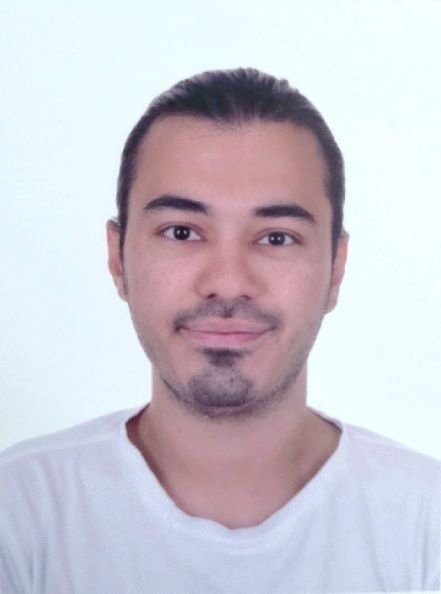

Berkay Keskin

Balikesir / Turkey
Phone : +90 543 963 17 65
E-mail : beerkaykeskin@gmail.com
Summary :
I'm an Electrical and Electronics Engineer who
graduated from Dumlupinar University in
2022 and my graduation GPA is 3.10. I aim to
be a successful and exemplary engineer in the
sector. I like to learn new speaking and
programming language. I mean, I am an engineer
keep the motivation and communication high and
aim to improve myself every time. While improve
myself, I add value to the company I work for.
Education :
- Balikesir University
- Master's Degree in Occupational Health and Safety
2023 - 2024 (Present)
- It's not obstacle for working
- Dumlupinar University
- Bachelor's Degree in Electrical and Electronics Engineering
September 2017 - September 2022
- I studied at English Preparatory Program between
2017‑2018.
Work Experience :
- Electrical and Electronics Engineering Intern
EKOSinerji Inc.
July 2022 - September 2022
- I got information about Transformers and Cells
that produced by EKOSinerji and I saw them.
- I was on the part of labor and in this way I saw
the production stage of EKOSinerji.
- I helped to build the electrical panels that was
undertaken by workers and engineers.
- I was on the department of Test in some times of
my internship and I realized the Cells' test with
workers.
- Electrical and Electronics Engineering Intern
Eti Maden Inc.
July 2020 - August 2020
- I had information about PLC, Sensor and Electric
Motor types in the company and also got
information about PLC Programming.
- I saw the malfunctions encountered in the
company and tried to solve them.
- I got information about cameras and I saw and
learned how to setup a camera system as well.
- I had a chance for viewing the PLC Programming
projects that was realized by workers and
engineers.
Skills :
- Python, PLC, Microsoft Word,
Microsoft Powerpoint,
Microsoft Excel,
AutoCAD,
PSpice,
Visio,
SolidWorks,
mikroC,
Proteus Professional,
NI Multisim,
HTML,
CSS,
PyQt5,
Arduino,
Technical Drawing,
EPlan,
Factory IO,
Altium Designer,
Tia Portal,
SCADA,
HMI,
PVSyst,
PVSOL,
C
Languages :
- Turkish Native
- English Professional
- German Basic